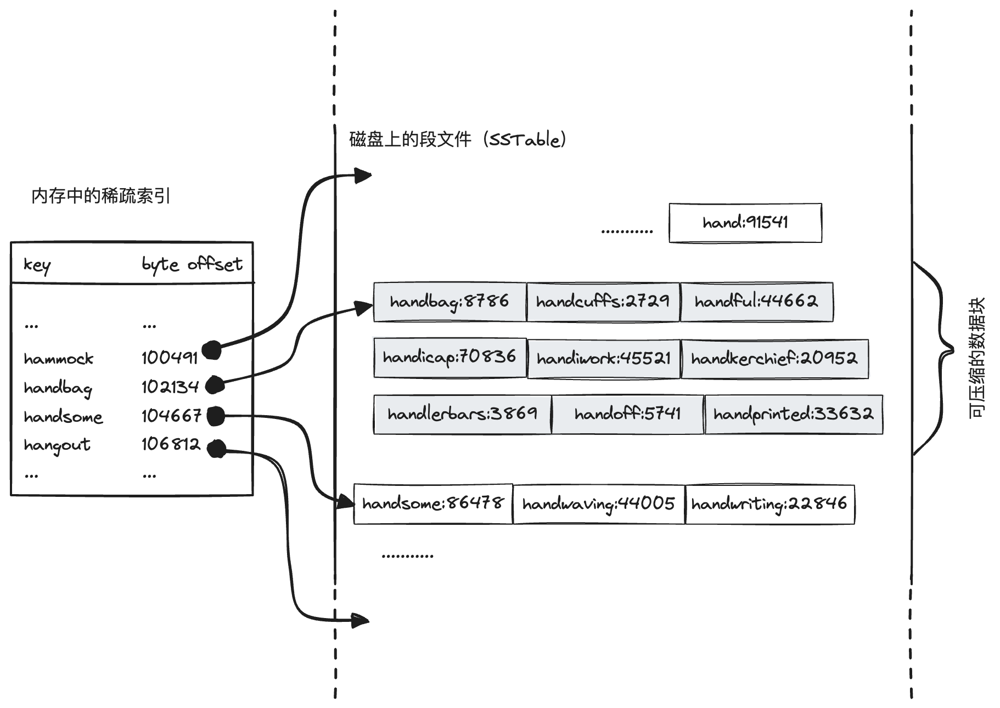
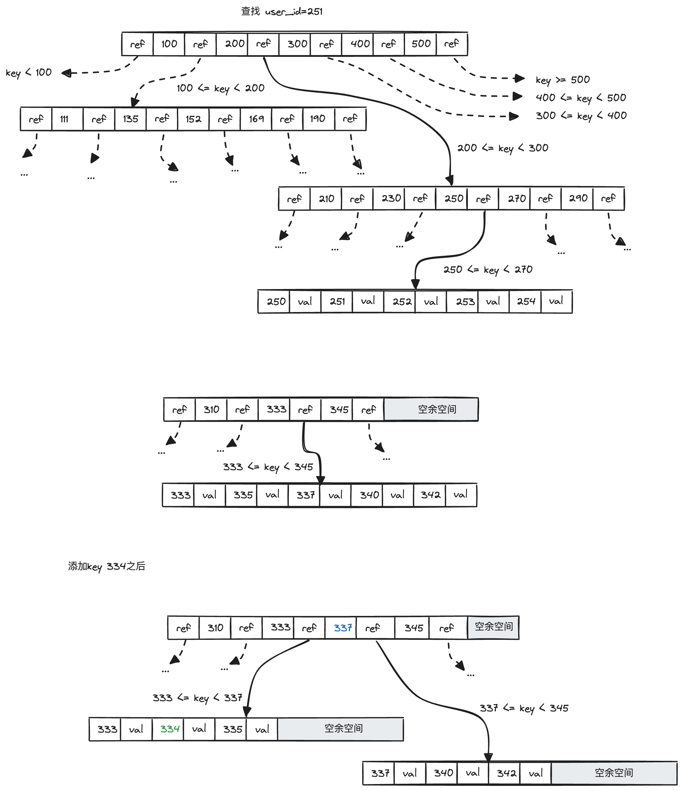
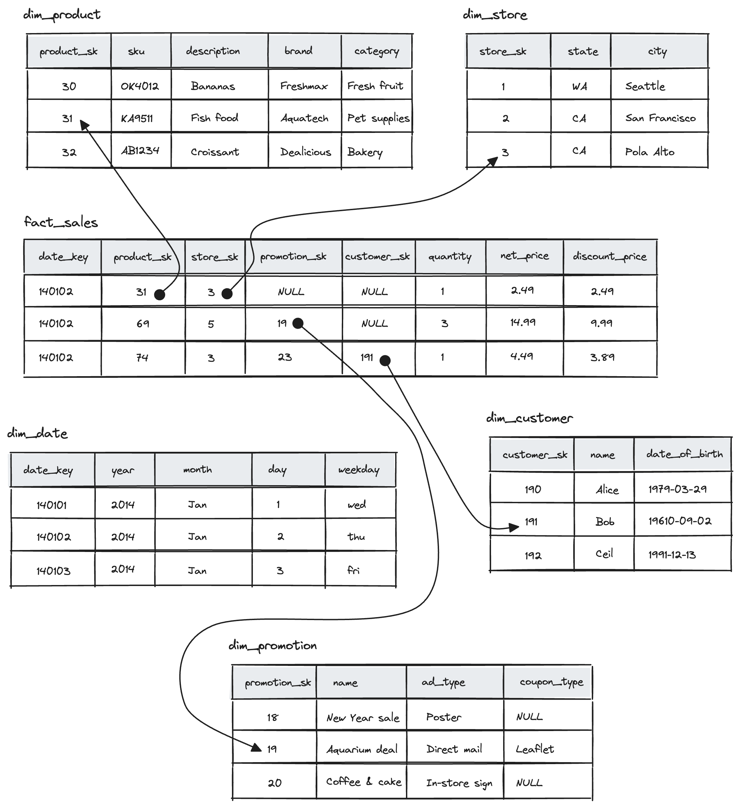
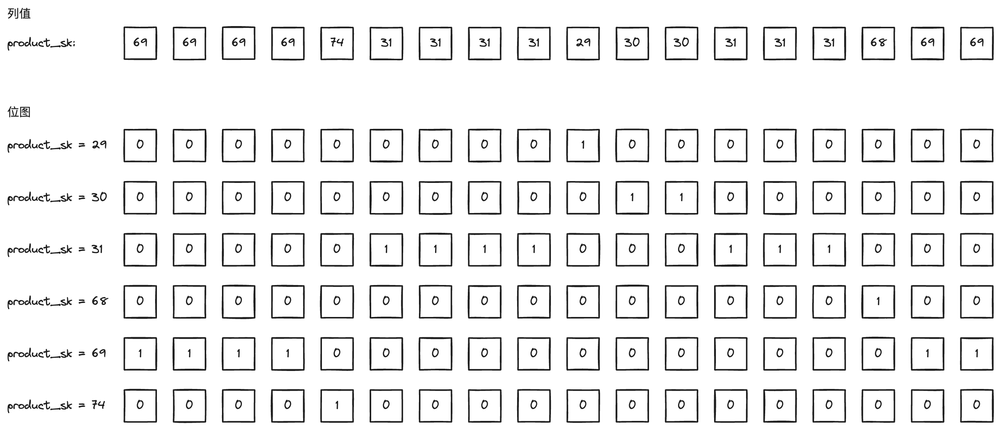
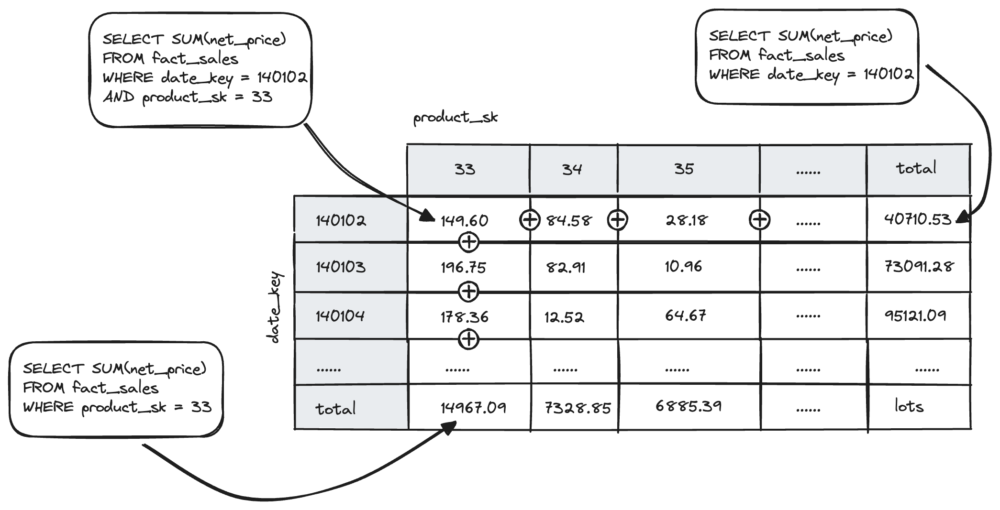

第3章 数据存储与检索
本章主要讲了数据库存储涉及到的核心数据结构，以及数据库两种主要的应用场景：OLTP和OLAP。
核心数据结构
在最基本的层面，数据库只需做两件事：向它插入数据时，它保存数据；之后查询时，它返回数据
数据存储两种形式：追加和原地修改。索引是为了提高查询速度的额外数据结构。
哈希索引
典型产品：Bitcask。
- 内存侧：hashmap索引，key为查询的键，value为文件中数据偏移量。
- 磁盘侧：真正的数据文件存储在磁盘上。
为什么进行日志分段？
书中说为了避免用尽磁盘空间。我当时看了很纳闷，不分段，也就是一直往一个文件写，边写边检测文件大小是否小于磁盘剩余空间不就完了？为什么非得分段？请教了下chatgbt，给出了三个理由：
- 磁盘碎片化：长时间持续写入一个文件会导致磁盘碎片化，即文件被分散存储在物理磁盘的不同位置。
- 文件扩展：文件会持续增长，没有合适的管理，会耗尽磁盘空间（这不废话吗）。
- 日志管理：分成一定大小的段文件可以更好的管理日志。当文件达到一定大小时，关闭它并将后续写入到新的段文件中，可以使得日志的查找、备份、传输等操作更加方便和高效。
我又纳闷了，为什么长时间写入一个文件会碎片化，分段就不会？还有文件扩展，你边写边检测不就行了？
chatgbt给出的解答：
- 关于碎片化：持续写入一个文件时，磁盘上连续的可用空间可能不足以一次性写入整个文件，这倒是，文件越大，能够连续写入的概率越小。
- 边写边检测的方法是可行的，但是可靠性不如分段。比如，如果写入速度过快，检测文件大小频率太低，仍然会导致文件大小超过磁盘的情况。此外，写入文件时可能会出现错误或异常，导致无法正确检测文件大小的情况，导致数据丢失。分段的思想有点类似造船的时候设置的多个水密仓，单个仓损坏，船舶仍然可控，控制了数据损毁的影响范围。
追加日志的好处：
- 顺序写比随机写高效得多。
- 并发和崩溃恢复简单得多。
- 合并旧段可以避免碎片化。
哈希索引缺点：
- 必须全部放入内存，如果有大量的键，内存存不下就不行了。
- 区间查询效率不高。
SSTables和LSM-Tree
将段文件中的key-value对按键排序就是排序字符串表（SSTables）。相比哈希索引的日志段，具有以下优点：
- 合并更加简单有效。因为段文件已经按照key排序，合并多个段时，只需依次比较段的第一个键，然后将最小的放置在输入文件中，重复这一过程即可完成合并。
- 在文件中查找键时，不再需要在内存中保存所有键的索引，只需维护一个保存有部分键的稀疏索引。比如查找键handiwork，但是知道handbag和handsome的偏移量，根据键的顺序特性，handiwork的偏移量肯定位于handbag和handsome之间。
- 读取的时候因为往往要扫描多个key-value，可以将这些key-value对保存在一个块中，稀疏索引指向块的开头，更好的利用磁盘读取的局部性。对块还可以压缩合并，节省磁盘空间，还能减少磁盘IO带宽的占用。

稀疏索引如何查找key？
稀疏索引是按照键排序好的，查找指定key时，可以采用二分法查找小于等于key的值，拿上面的示例来说，查找handiwork时，索引中没有handiwork，因此会查出来handbag，以handbag为起点查找，段文件中如果查不到那就是没有这个key，在leetcode上很常见的类型，算法复杂度log(n)。
SSTable构建和维护[1]
- 写入时，添加到内存中的平衡树数据结构（也称内存表），比如红黑树。
- 当内存表大于某个阈值（通常为几兆字节）将其作为SSTables写入磁盘。
- 读时先在内存表中查找，然后查找最新的磁盘段文件，然后是次新的段文件，依次类推。
- 后台进程周期性的合并和压缩段文件。
- 为了避免数据崩溃时数据丢失，可以在磁盘上保留单独的日志，每个写入都会立即追加到这个日志，该日志不需要排序，它的唯一目的就是恢复内存表。
内存索引和内存表
在SSTables的语境下，前者是为了快速定位SSTables在磁盘上的数据块，后者是新写入但未持久化到磁盘暂存在内存中的数据部分。
LSM-Tree（Log-Structured Merge-Tree）日志结构的合并树，基于合并和压缩排序文件原理的存储引擎通常都被称为LSM存储引擎。
性能优化：
- 当键查不到时，需要扫描内存表和多个段文件，效率很低，可以引入布隆过滤器来改善这一状况。
- 大小分级和分层压缩。LevelDB和RocksDB使用分层压缩，HBase使用大小分级，Cassandra同时支持这两种方式。
B-tree
B-tree以固定大小的页为单位，传统大小为4KB，页是内部读写的最小单位，相比之下SSTable数据块是数据的逻辑分割单位。
B-tree一个页的子叶数量称为分支因子。
在插入时，如果一个页已经满了，就会分裂为两个半满的页。

B树和B+树
- 节点结构：B树节点存储键值对，B+树只有叶子节存储值，中间节点只存键，这样分支因子更高，树的高度更低，从而减少了磁盘访问次数。
- 叶子节点之间的连接：B+树增加了叶子节点之间的连接，提高了范围查找的效率。
预写日志（write-ahead log，WAL）是为了让数据块能从奔溃中恢复设置的额外的数据结构。
B-tree的优化措施：
- 不再用覆盖页和WAL了进行崩溃恢复，而是写时复制（也就是和java的CopyOnWrite数据结构类似的思想）。
- 使用键的缩略信息，而不是完整的键。
- 将相邻叶子页按顺序存在磁盘上，提高数据的局部性。
- 叶子之间的指针（上文B+树那里提过了）。
- 分形树等变体。
根据经验，LSM-Tree写时快，B-tree读时快。
总结，LSM-tree特点：
- 写入吞吐高。
- 碎片少，数据紧凑，磁盘占用少。
- 压缩会影响写入。
B-tree的特点：
- 事务支持好（在实现中，通过范围锁定键进行事务隔离）。
- 每个键对应唯一的索引位置。
其他索引结构
聚集索引
在索引结构中，可以存数据（行）的引用，也可以存数据本身，如果后一种，这种索引就称为聚集索引（也叫聚簇索引）。
在MySQL中主键索引是聚集索引，二级索引引用主键，在查找时多了一次从普通列到主键的检索过程。
多列索引
也叫多维索引，是为了提高多列数据条件查找的速度。在使用这种索引时，要考虑左端匹配。
全文索引和模糊搜索
之前介绍的索引，都是精确匹配的索引，而全文索引必须得支持对同义词，或者疏忽导致拼写错误进行检索，比如Lucene支持在某个编辑距离内搜索文本，采用的是字符序列生成一个有限状态机，可以高效的搜索单词。
内存数据库
我们常说的缓存就属于这一类，比如Redis、Memcached，数据完全保存在内存中，有些会提供弱的持久化。
作者提到：
与直觉相反，内存数据库的性能优势并不是因为它们不需要从磁盘读取。如果有足够的内存，即使是基于磁盘的存储引/擎，也可能永远不需要从磁盘读取，因为操作系统将最近使用的磁盘块缓存在内存中。相反，内存数据库可以更快，是因为它们避免使用写磁盘的格式对内存数据结构编码的开销。
“它们避免使用写磁盘的格式对内存数据结构编码的开销”就是那些对数据进行的序列化、压缩和持久化等操作，比如json想存在磁盘上，要不存成文本，要不经过protobuffer序列化，也就是所谓的“编码”，才能存在磁盘上。
OLTP和OLAP
OLTP（online transaction processing）根据用户的输入添加或更新记录，由于这些应用是交互式的，所以称为在线事务处理。
事务不一定具体ACID属性。事务处理只是意味着允许客户端进行低延迟读取和写入，是相对批处理而说的（难道交互式的非自动化批处理的就可称之为事务？）。
OLAP（online analytic processing），数据库越来越多的用于数据分析，这些分析通常由业务分析师编写，为了给管理层提供更好决策的报告，为了和OLTP区分，称为在线分析处理。
数据仓库
对于大型公司，为了避免对在线服务的影响，都有自己专门的数据仓库，OLTP数据库经过ETL（Extract-Transform-Load，提取-转换-加载）生成OLAP数据库（数据仓库）（我之前就在一家公司使用PL/SQL干过这个活）。
有两种主流的分析数据模型：星形和雪花型分析模式。
所谓星形模型，是说中间有一个非常宽（通常超过100列）的事实表，围绕着它衍生出来许多维度表（只用到事实表中的几列），这些连接就像星星的光茫，因此得名。

而雪花模式是星形的更丰富版本，维度进一步细分为子空间（雪花是一种分形结构，它有六个分支，可以无限递归）。
列式存储
创建维度表时，大部分时候只用到了事实表的几列，每次将整行读出来是对资源的巨大浪费，很自然地就有人就想到了按列存储。
比如Parquet是基于Google Dremel的一种支持文档数据库的列存储格式
面向列的存储依赖一系列列文件，里面顺序保存着列数据。一整行通过拼接列文件同一个索引位置的数据组成，比如取23行，将列文件23位置的数据拼接起来。
列压缩
列式存储有大量重复值，非常适合压缩。
使用位图存储。
所谓位图就是列的每个不同值（假设为M）使用一个序列，通常是一个数组，序列的的长度等于列长（假设为N），根据列的值是否等于当前序列的值进行标记，比如1代表等于，0代表不等于，最终形成一个M x N的二维数据结构。

位图的优点：
- 压缩重复值，节省空间。
- 加速过滤和条件查询：可以快速指示数据中符合条件的行。
- 支持高效的AND/OR操作：也就是便于计算机矢量化处理。
列排序
排序后最直接的好处就是便于查询。
列排序后相同的值聚集在一起，更利于压缩，比如转为位图后，所有值都是0/1，再使用游程编码，即便几十亿行的表也可以压缩到几千字节。
上面位图的游程编码。
product_sk = 29: 9, 1 (9 zeros, 1 one, rest zeros)
product_sk = 30: 10, 2 (10 zeros, 2 one, rest zeros)
product_sk = 31: 5, 4, 3, 3 (5 zeros, 4 ones, 3 zeros, 3 ones, rest zeros)
product_sk = 68: 15, 1 (15 zeros, 1 one, rest zeros)
product_sk = 69: 0, 4, 12, 2 (0 zeros, 4 one, 12 zeros, 2 ones)
product_sk = 74: 4, 1 (4 zeros, 1 one, rest zeros)
通常为了适配多种查询，会存储数据的多个排序副本，这一思想最早由商业数据仓库Vertica所采用。
数据立方体和物化视图
物化视图其实就是特定查询的一个缓存，这样每次查询不用从零开始，速度更快。
数据立方体是物化视图的一种实现，它是不同维度的聚合网格。比如下面事实表只包含两个维度：日期（date_key)和产品（product_key），绘制一个二维表。每个单元格是date-product组合的事实表属性（图中为net_price），沿着行或列聚合，得到一个减少一个维度的总和。

对于多维的事实表类似，比如有五个维度：日期、产品、商店、促销和客户。这意味着会生成一个五个维度的立方体，五个维度的值自由组合，比如单个维度如日期，两个维度（日期，产品），三个维度（日期，产品，客户）……。
LevelDB和RocksDB的算法大致就是这样的，主要用于嵌入到其他应用程序的key-value存储引擎库。类似的存储引擎库还被用于Cassandra和HBase，这两个引擎都受到Google的Bigtable论文的启发。 ↩︎